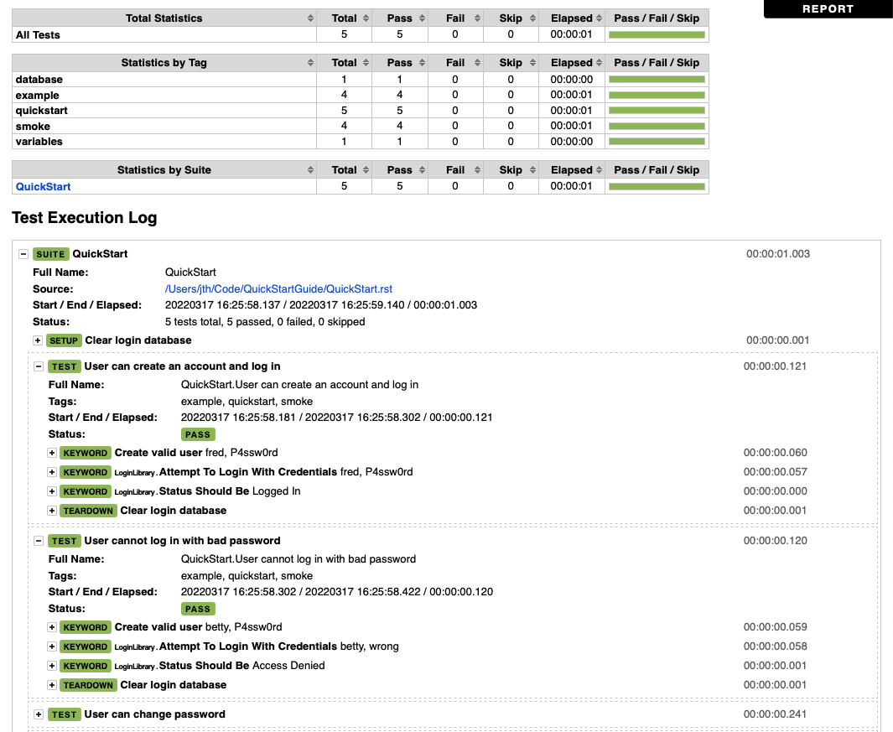
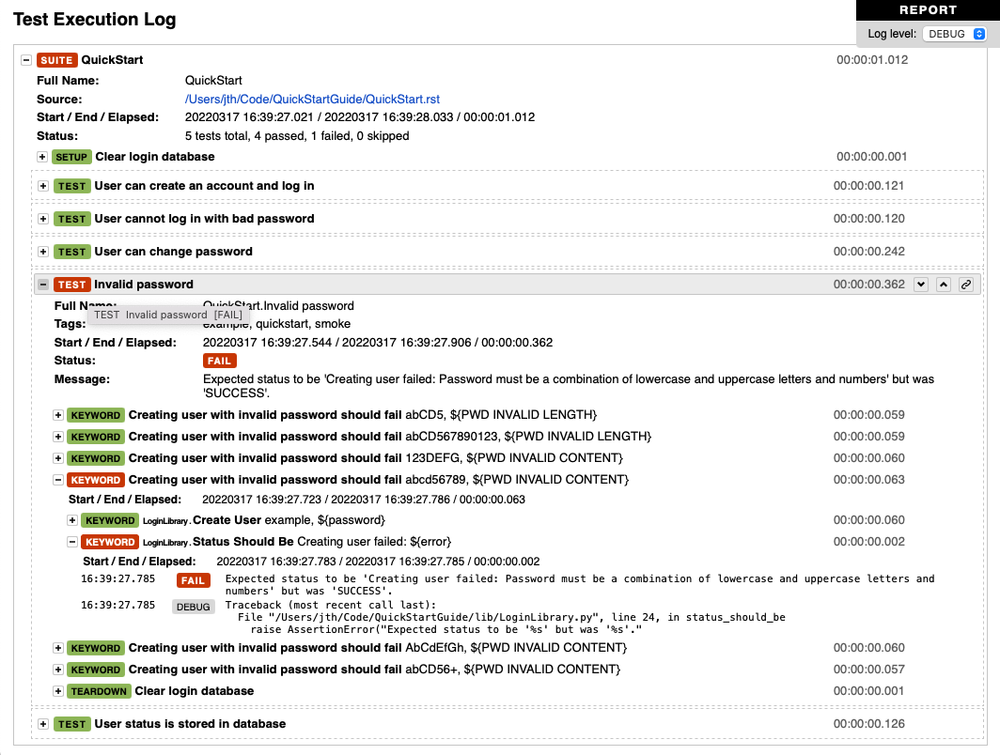
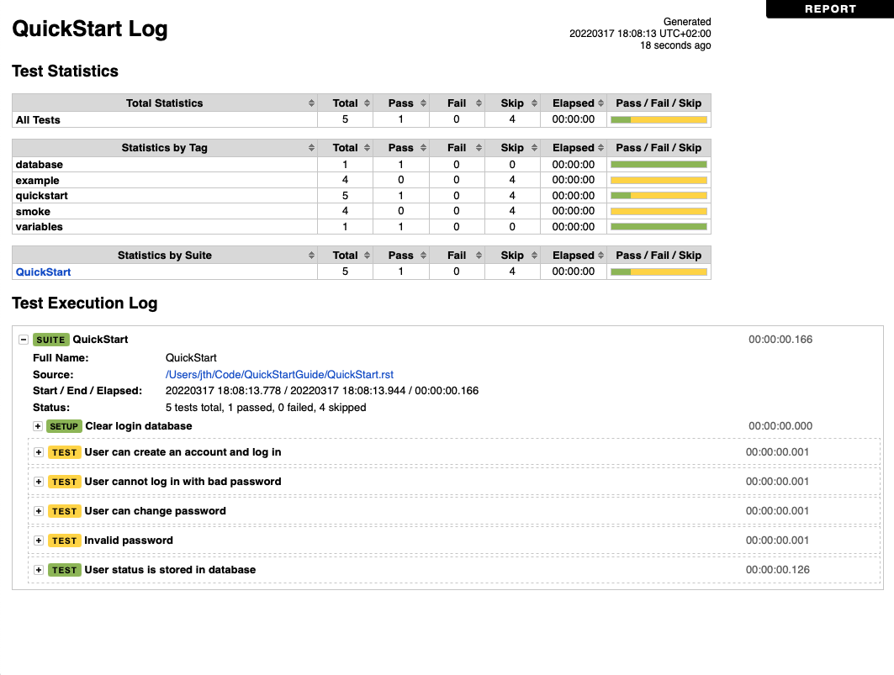
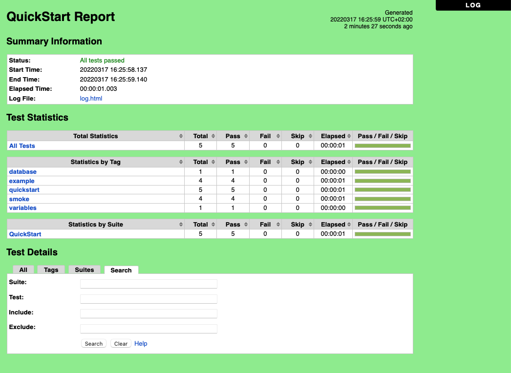
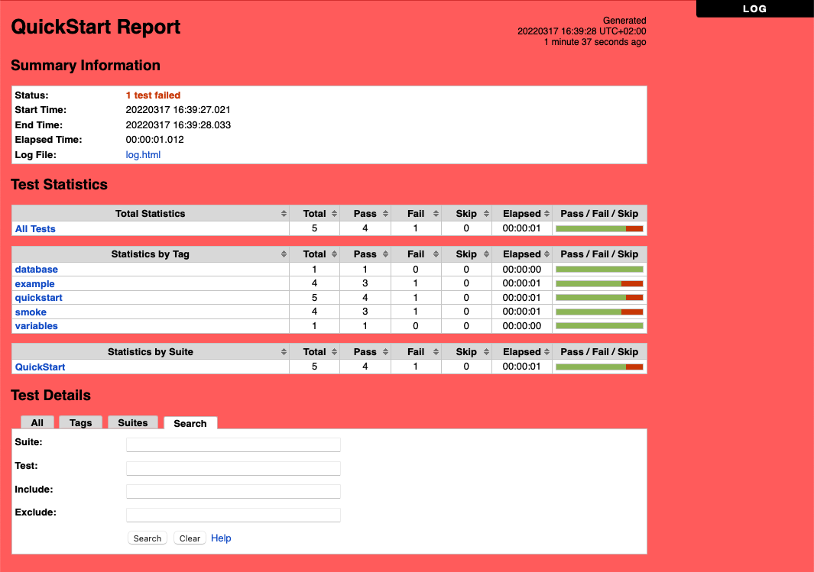
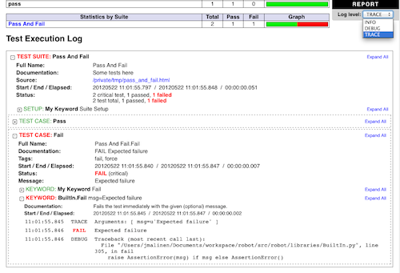
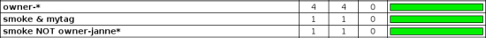
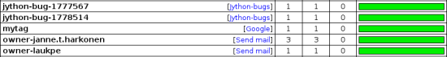

Output files¶
Several output files are created when tests are executed, and all of them are somehow related to test results. This section discusses what outputs are created, how to configure where they are created, and how to fine-tune their contents.
Different output files¶
This section explains what different output files can be created and
how to configure where they are created. Output files are configured
using command line options, which get the path to the output file in
question as an argument. A special value NONE
(case-insensitive) can be used to disable creating a certain output
file.
Output directory¶
All output files can be set using an absolute path, in which case they
are created to the specified place, but in other cases, the path is
considered relative to the output directory. The default output
directory is the directory where the execution is started from, but it
can be altered with the --outputdir (-d) option. The path
set with this option is, again, relative to the execution directory,
but can naturally be given also as an absolute path. Regardless of how
a path to an individual output file is obtained, its parent directory
is created automatically, if it does not exist already.
Output file¶
Output files contain all execution results in machine readable XML or JSON format. Log, report and xUnit files are typically generated based on them, and they can also be combined and otherwise post-processed with Rebot. Various external tools also process output files to be able to show detailed execution information.
Tip
Generating report and xUnit files as part of test execution does not require processing output files after execution. Disabling log generation when running tests can thus save memory.
The command line option --output (-o) determines the path where
the output file is created. The path is relative to the output directory
and the default value is output.xml when executing tests.
When post-processing outputs with Rebot, new output files are not created
unless the --output option is explicitly used.
It is possible to disable the output file by using a special value NONE
with the --output option. If no outputs are needed, they should
all be explicitly disabled using --output NONE --report NONE --log NONE.
XML output format¶
Output files are created using XML by default. The XML output format is documented in the result.xsd schema file.
JSON output format¶
Robot Framework supports also JSON outputs and this format is used automatically if the output file extension is .json. The JSON output format is documented in the result.json schema file.
Note
JSON output files are supported during execution starting from Robot Framework 7.2. Rebot can create them based on XML output files already with Robot Framework 7.0.
Legacy XML format¶
There were some backwards incompatible changes to the XML output file format in
Robot Framework 7.0. To make it possible to use new Robot Framework versions
with external tools that are not yet updated to support the new format, there is
a --legacyoutput option that produces output files that are compatible
with Robot Framework 6.x and earlier. Robot Framework itself can process output
files both in the old and in the new formats.
We hope that external tools are updated soon, but we plan to support this option at least until Robot Framework 8.0. If you encounter tools that are not compatible, please inform the tool developers about changes.
Log file¶
Log files contain details about the executed test cases in HTML format. They have a hierarchical structure showing test suite, test case and keyword details. Log files are needed nearly every time when test results are to be investigated in detail. Even though log files also have statistics, reports are better for getting an higher-level overview.
The command line option --log (-l) determines where log
files are created. Unless the special value NONE is used,
log files are always created and their default name is
log.html.

An example of beginning of a log file

An example of a log file with keyword details visible

An example of a log file with skipped and passed tests
Report file¶
Report files contain an overview of the test execution results in HTML format. They have statistics based on tags and executed test suites, as well as a list of all executed test cases. When both reports and logs are generated, the report has links to the log file for easy navigation to more detailed information. It is easy to see the overall test execution status from report, because its background color is green, if all tests pass and bright red if any test fails. Background can also be yellow, which means that all tests were skipped.
The command line option --report (-r) determines where
report files are created. Similarly as log files, reports are always
created unless NONE is used as a value, and their default
name is report.html.

An example report file of successful test execution

An example report file of failed test execution
XUnit compatible result file¶
XUnit result files contain the test execution summary in xUnit compatible XML format. These files can thus be used as an input for external tools that understand xUnit reports. For example, Jenkins continuous integration server supports generating statistics based on xUnit compatible results.
Tip
Jenkins also has a separate Robot Framework plugin.
XUnit output files are not created unless the command line option
--xunit (-x) is used explicitly. This option requires a path to
the generated xUnit file, relatively to the output directory, as a value.
XUnit output files were changed pretty heavily in Robot Framework 5.0.
They nowadays contain separate <testsuite> elements for each suite,
<testsuite> elements have timestamp attribute, and suite documentation
and metadata is stored as <property> elements.
Debug file¶
Debug files are plain text files that are written during the test
execution. All messages got from test libraries are written to them,
as well as information about started and ended test suites, test cases
and keywords. Debug files can be used for monitoring the test
execution. This can be done using, for example, a separate
fileviewer.py_
tool, or in UNIX-like systems, simply with the tail -f command.
Debug files are not created unless the command line option
--debugfile (-b) is used explicitly.
Timestamping output files¶
All output files generated by Robot Framework itself can be automatically timestamped
with the option --timestampoutputs (-T). When this option is used,
a timestamp in the format YYYYMMDD-hhmmss is placed between
the extension and the base name of each file. The example below would,
for example, create output files like
output-20080604-163225.xml and mylog-20080604-163225.html:
Setting titles¶
The default titles for logs and reports are generated by prefixing
the name of the top-level test suite with Test Log or
Test Report. Custom titles can be given from the command line
using the options --logtitle and --reporttitle,
respectively.
Example:
Note
Prior to Robot Framework 3.1, underscores in the given titles were converted to spaces. Nowadays spaces need to be escaped or quoted like in the example above.
Setting background colors¶
By default the report file has red background if there are failures,
green background if there are passed tests and possibly some skipped ones,
and a yellow background if all tests are skipped or no tests have been run.
These colors can be customized by using the --reportbackground
command line option, which takes two or three colors separated with a colon
as an argument:
If you specify two colors, the first one will be used instead of the default green (pass) color and the second instead of the default red (fail). This allows, for example, using blue instead of green to make backgrounds easier to separate for color blind people.
If you specify three colors, the first two have same semantics as earlier and the last one replaces the default yellow (skip) color.
The specified colors are used as a value for the body
element's background CSS property. The value is used as-is and
can be a HTML color name (e.g. red), a hexadecimal value
(e.g. #f00 or #ff0000), or an RGB value
(e.g. rgb(255,0,0)). The default green, red and yellow colors are
specified using hexadecimal values #9e9, #f66 and #fed84f,
respectively.
Log levels¶
Available log levels¶
Messages in log files can have different log levels. Some of the messages are written by Robot Framework itself, but also executed keywords can log information using different levels. The available log levels are:
-
FAIL - Used when a keyword fails. Can be used only by Robot Framework itself.
-
ERROR - Used for displaying errors. Errors are shown in the console and in
the Test Execution Errors section in log files, but they
do not affect test case statuses. If the --exitonerror option is enabled,
errors stop the whole execution, though,
-
WARN - Used for displaying warnings. Warnings are shown in the console and in
the Test Execution Errors section in log files, but they
do not affect test case statuses.
-
INFO - The default level for normal messages. By default,
messages below this level are not shown in the log file.
-
DEBUG - Used for debugging purposes. Useful, for example, for
logging what libraries are doing internally. When a keyword fails,
a traceback showing where in the code the failure occurred is
logged using this level automatically.
-
TRACE - More detailed debugging level. The keyword arguments and return values
are automatically logged using this level.
Setting log level¶
By default, log messages below the INFO level are not logged, but this
threshold can be changed from the command line using the
--loglevel (-L) option. This option takes any of the
available log levels as an argument, and that level becomes the new
threshold level. A special value NONE can also be used to
disable logging altogether.
It is possible to use the --loglevel option also when
post-processing outputs with Rebot. This allows, for example,
running tests initially with the TRACE level, and generating smaller
log files for normal viewing later with the INFO level. By default
all the messages included during execution will be included also with
Rebot. Messages ignored during the execution cannot be recovered.
Another possibility to change the log level is using the BuiltIn
keyword Set Log Level in the test data. It takes the same
arguments as the --loglevel option, and it also returns the
old level so that it can be restored later, for example, in a test
teardown.
Visible log level¶
If the log file contains messages at
DEBUG or TRACE levels, a visible log level drop down is shown
in the upper right corner. This allows users to remove messages below chosen
level from the view. This can be useful especially when running test at
TRACE level.

An example log showing the visible log level drop down
By default the drop down will be set at the lowest level in the log file, so
that all messages are shown. The default visible log level can be changed using
--loglevel option by giving the default after the normal log level
separated by a colon:
In the above example, tests are run using level DEBUG, but
the default visible level in the log file is INFO.
Splitting logs¶
Normally the log file is just a single HTML file. When the amount of the test
cases increases, the size of the file can grow so large that opening it into
a browser is inconvenient or even impossible. Hence, it is possible to use
the --splitlog option to split parts of the log into external files
that are loaded transparently into the browser when needed.
The main benefit of splitting logs is that individual log parts are so small that opening and browsing the log file is possible even if the amount of the test data is very large. A small drawback is that the overall size taken by the log file increases.
Technically the test data related to each test case is saved into a JavaScript file in the same folder as the main log file. These files have names such as log-42.js where log is the base name of the main log file and 42 is an incremented index.
The JavaScript files are saved to the same directory where the log file
itself is saved. It is the common output directory by default, but
it can be changed with the --log command line option.
Note
When copying the log files, you need to copy also all the log-.js* files or some information will be missing.
Configuring statistics¶
There are several command line options that can be used to configure and adjust the contents of the Statistics by Tag, Statistics by Suite and Test Details by Tag tables in different output files. All these options work both when executing test cases and when post-processing outputs.
Configuring displayed suite statistics¶
When a deeper suite structure is executed, showing all the test suite
levels in the Statistics by Suite table may make the table
somewhat difficult to read. By default all suites are shown, but you can
control this with the command line option --suitestatlevel which
takes the level of suites to show as an argument:
Including and excluding tag statistics¶
When many tags are used, the Statistics by Tag table can become
quite congested. If this happens, the command line options
--tagstatinclude and --tagstatexclude can be
used to select which tags to display, similarly as
--include and --exclude are used to select test
cases:
Generating combined tag statistics¶
The command line option --tagstatcombine can be used to
generate aggregate tags that combine statistics from multiple
tags. The combined tags are specified using tag patterns where
* and ? are supported as wildcards and AND,
OR and NOT operators can be used for combining
individual tags or patterns together.
The following examples illustrate creating combined tag statistics using different patterns, and the figure below shows a snippet of the resulting Statistics by Tag table:

Examples of combined tag statistics
As the above example illustrates, the name of the added combined statistic
is, by default, just the given pattern. If this is not good enough, it
is possible to give a custom name after the pattern by separating them
with a colon (:):
Note
Prior to Robot Framework 3.1, underscores in the custom name were converted to spaces. Nowadays spaces need to be escaped or quoted like in the example above.
Creating links from tag names¶
You can add external links to the Statistics by Tag table by
using the command line option --tagstatlink. Arguments to this
option are given in the format tag:link:name, where tag
specifies the tags to assign the link to, link is the link to
be created, and name is the name to give to the link.
tag may be a single tag, but more commonly a simple pattern
where * matches anything and ? matches any single
character. When tag is a pattern, the matches to wildcards may
be used in link and title with the syntax %N,
where "N" is the index of the match starting from 1.
The following examples illustrate the usage of this option, and the figure below shows a snippet of the resulting Statistics by Tag table when example test data is executed with these options:

Examples of links from tag names
Adding documentation to tags¶
Tags can be given a documentation with the command line option
--tagdoc, which takes an argument in the format
tag:doc. tag is the name of the tag to assign the
documentation to, and it can also be a simple pattern matching
multiple tags. doc is the assigned documentation.
The given documentation is shown with matching tags in the Test Details by Tag table, and as a tool tip for these tags in the Statistics by Tag table. If one tag gets multiple documentations, they are combined together and separated with an ampersand.
Examples:
Note
Prior to Robot Framework 3.1, underscores in the documentation were converted to spaces. Nowadays spaces need to be escaped or quoted like in the examples above.
Removing and flattening keywords¶
Most of the content of output files comes from keywords and their log messages. When creating higher level reports, log files are not necessarily needed at all, and in that case keywords and their messages just take space unnecessarily. Log files themselves can also grow overly large, especially if they contain FOR loops or other constructs that repeat certain keywords multiple times.
In these situations, command line options --removekeywords and
--flattenkeywords can be used to dispose or flatten unnecessary keywords.
They can be used both when executing test cases and when post-processing
outputs. When used during execution, they only affect the log file, not
the XML output file. With rebot they affect both logs and possibly
generated new output XML files.
Removing keywords¶
The --removekeywords option removes keywords and their messages
altogether. It has the following modes of operation, and it can be used
multiple times to enable multiple modes. Keywords that contain errors
or warnings are not removed except when using the ALL mode.
-
ALL - Remove data from all keywords unconditionally.
-
PASSED - Remove keyword data from passed test cases. In most cases, log files
created using this option contain enough information to investigate
possible failures.
-
FOR - Remove all passed iterations from FOR loops except the last one.
-
WHILE - Remove all passed iterations from WHILE loops except the last one.
-
WUKS - Remove all failing keywords inside BuiltIn keyword
Wait Until Keyword Succeeds except the last one.
NAME:<pattern>- Remove data from all keywords matching the given pattern regardless the
keyword status. The pattern is matched against the full name of the keyword,
prefixed with the possible library or resource file name like
MyLibrary.Keyword Name. The pattern is case, space, and underscore insensitive, and it supports simple patterns with*,?and[]as wildcards. TAG:<pattern>- Remove data from keywords with tags that match the given pattern. Tags are
case and space insensitive and they can be specified using tag patterns
where
*,?and[]are supported as wildcards andAND,ORandNOToperators can be used for combining individual tags or patterns together. Can be used both with library keyword tags and user keyword tags.
Examples:
Removing keywords is done after parsing the output file and generating an internal model based on it. Thus it does not reduce memory usage as much as flattening keywords.
Flattening keywords¶
The --flattenkeywords option flattens matching keywords. In practice
this means that matching keywords get all log messages from their child
keywords, recursively, and child keywords are discarded otherwise. Flattening
supports the following modes:
-
FOR - Flatten FOR loops fully.
-
WHILE - Flatten WHILE loops fully.
-
ITERATION - Flatten individual
FORandWHILEloop iterations. -
FORITEM - Deprecated alias for
ITERATION. NAME:<pattern>- Flatten keywords matching the given pattern. Pattern matching rules are
same as when removing keywords using the
NAME:<pattern>mode. TAG:<pattern>- Flatten keywords with tags matching the given pattern. Pattern matching
rules are same as when removing keywords using the
TAG:<pattern>mode.
Examples:
Flattening keywords is done already when the output file is parsed initially. This can save a significant amount of memory especially with deeply nested keyword structures.
Flattening keyword during execution time¶
Starting from Robot Framework 6.1, it is possible to enable the keyword flattening during
the execution time. This can be done only on an user keyword level by defining the reserved tag
robot:flatten as a keyword tag. Using this tag will work similarly as the command line
option described in the previous chapter, e.g. all content except for log messages is removed
from under the keyword having the tag. One important difference is that in this case, the removed
content is not written to the output file at all, and thus cannot be accessed at later time.
Automatically expanding keywords¶
Keywords that have passed are closed in the log file by default. Thus information
they contain is not visible unless you expand them. If certain keywords have
important information that should be visible when the log file is opened, you can
use the --expandkeywords option to set keywords automatically expanded
in log file similar to failed keywords. Expanding supports the following modes:
NAME:<pattern>- Expand keywords matching the given pattern. Pattern matching rules are
same as when removing keywords using the
NAME:<pattern>mode. TAG:<pattern>- Expand keywords with tags matching the given pattern. Pattern matching
rules are same as when removing keywords using the
TAG:<pattern>mode.
If you need to expand keywords matching different names or patterns, you can
use the --expandkeywords multiple times.
Examples:
Note
The --expandkeywords option is new in Robot Framework 3.2.
Setting start and end time of execution¶
When combining outputs using Rebot, it is possible to set the start
and end time of the combined test suite using the options --starttime
and --endtime, respectively. This is convenient, because by default,
combined suites do not have these values. When both the start and end time are
given, the elapsed time is also calculated based on them. Otherwise the elapsed
time is got by adding the elapsed times of the child test suites together.
It is also possible to use the above mentioned options to set start and end times for a single suite when using Rebot. Using these options with a single output always affects the elapsed time of the suite.
Times must be given as timestamps in the format YYYY-MM-DD
hh:mm:ss.mil, where all separators are optional and the parts from
milliseconds to hours can be omitted. For example, 2008-06-11
17:59:20.495 is equivalent both to 20080611-175920.495 and
20080611175920495, and also mere 20080611 would work.
Examples:
Limiting error message length in reports¶
If a test case fails and has a long error message, the message shown in
reports is automatically cut from the middle to keep reports easier to
read. By default messages longer than 40 lines are cut, but that can be
configured by using the --maxerrorlines command line option.
The minimum value for this option is 10, and it is also possible to use
a special value NONE to show the full message.
Full error messages are always visible in log files as messages of the failed keywords.
Note
The --maxerrorlines option is new in Robot Framework 3.1.
Programmatic modification of results¶
If the provided built-in features to modify results are not enough,
Robot Framework makes it possible to do custom modifications
programmatically. This is accomplished by creating a model modifier and
activating it using the --prerebotmodifier option.
This functionality works nearly exactly like programmatic modification of
test data that can be enabled with the --prerunmodifier option.
The obvious difference is that this time modifiers operate with the
result model, not the running model. For example, the following modifier
marks all passed tests that have taken more time than allowed as failed:
1 2 3 | |
If more than one model modifier is needed, they can be specified by using
the --prerebotmodifier option multiple times. When executing tests,
it is possible to use --prerunmodifier and
--prerebotmodifier options together.
System log¶
Robot Framework has its own plain-text system log where it writes information about
- Processed and skipped test data files
- Imported test libraries, resource files and variable files
- Executed test suites and test cases
- Created outputs
Normally users never need this information, but it can be
useful when investigating problems with test libraries or Robot Framework
itself. A system log is not created by default, but it can be enabled
by setting the environment variable ROBOT_SYSLOG_FILE so
that it contains a path to the selected file.
A system log has the same log levels as a normal log file, with the
exception that instead of FAIL it has the ERROR
level. The threshold level to use can be altered using the
ROBOT_SYSLOG_LEVEL environment variable like shown in the
example below. Possible unexpected errors and warnings are
written into the system log in addition to the console and the normal
log file.